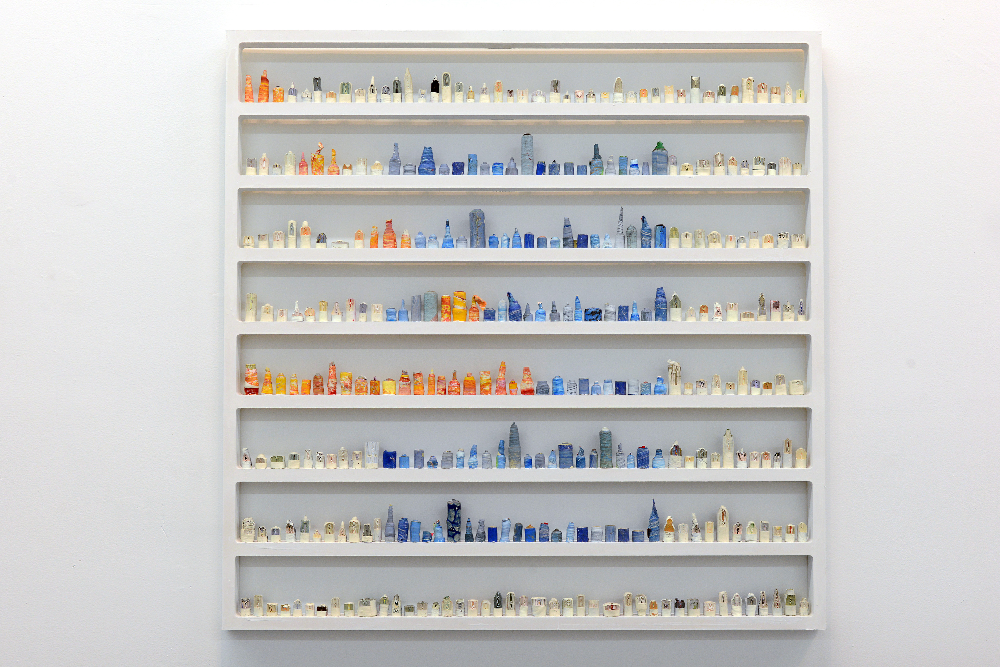

By Adam Aslan
Hidden expression marked with strong visual imagery highlight the process by which Jovanni Luna creates “paintskins”. While the final art object is striking the entire process is filled with fulfilling aesthetic moments to which only the artist is privy.
“A paintskin, constructed out of latex paint, is in a constant state of transformation from its
initial state of liquid to solid. It gradually evolves through repetitive actions of layering, cutting
and rolling the paint. This laborious process of working becomes hidden with each additional
layer of material, obscuring the actions before it, allowing only subtle cues to be seen in the
end: hints of color, gentle textures, subtle brushstrokes, ” says Luna.

"953”, paintskins on wooden shelves, 36”x36”x2”, 2020 - Image courtesy of the artist
Luna recently showed work at Paradice Palase where he is an Oasis Studio member. Paradice Palase is quickly cementing itself a cultural institution on the far eastern boundary of Bushwick and Bedstuy, which is demarcated by Brooklyn’s heart of commerce, Broadway.
Here is a bit more from Paradice Palase about their platform and their show with Jovanni Luna:
“PARADICE PALASE is an arts platform promoting the democratization of the art world
for creators and patrons. We support emerging artists and foster accessible arts
patronage by producing collectible arts retails, online content, and exhibitions. We
champion a model funded in part by a public members community, where art makers
and lovers can subscribe in exchange for benefits.{
Founded in 2017 by Kat Ryals and Lauren Hirshfield, they connected after each
recognizing barriers to entry for artists and collectors in the contemporary art landscape.
Thus PARADICE PALASE is the love child of DIY and art world utopia, with a flare of
the bold and brilliant.
Postponed was a very exciting show to see Jovanni bring to life. As one of our Oasis
Studios Members, we had the privilege of following his progress on the series from its
infancy. There is an almost obsessive repetition that exists in his practice, and the
process to create each "paint skin" as he calls them - whether 3 feet tall or the size of a
finger - manifests as a sort of 3-dimensional mark making. Manipulation of latex house
paint has been the core of Jovanni's practice for nearly 10 years and it was exciting to
witness yet another innovative body of work with the material reach completion on our
gallery walls. The closing reception, on July 17th, was the first in-person reception we
hosted since the quarantine first began in NYC. We were very grateful to have been
able to assist in these works getting fresh eyes on them IRL. The works beg for intimate
encounters; the hundreds of mini spiraled forms populate their designated shelves and
each structure seemed at once both precious and concrete. The choice Jovanni makes
to present his paint skins within framed shelves triggers thoughts of categorical
archives, a coded language, macro and micro cityscapes, and rhythmic jazz. Perhaps
most poignant however is that postponed was birthed through a time of crisis, of people
feeling trapped in their boxes while knowing the precariousness the outside world now
offers. Other recent sculptures from Jovanni consider the ease in which things fall apart
if we rush to solve them. The works in postponed gave us a chance instead to hold
space for them, to move with grace and compassion, and be rewarded for it.”
Paradice Palase is located at 1260 Broadway, Brooklyn, NY, 11221
To learn more about Paradice Palase visit: paradicepalase.com
To learn more about Jovanni Luna visit: jovanniluna.com